XANAX

Utilisez les flèches pour naviguer sur le site.
Utilisez les flèches pour naviguer sur le site.
Xanax est un carnet de dessin utilisant une double pagination qui indique les proportions de noir et de blanc dans la page.
100 pages, 140 x 170mm
Impression risographique
sur Munken White 100g.
20 exemplaires.
Imprimé par Papier Machine
en Février 2016.
Ce carnet est composé en Volkorn, un caractère conçu
par Friedrich Althausen.
Edité par le collectif We.ch
☼